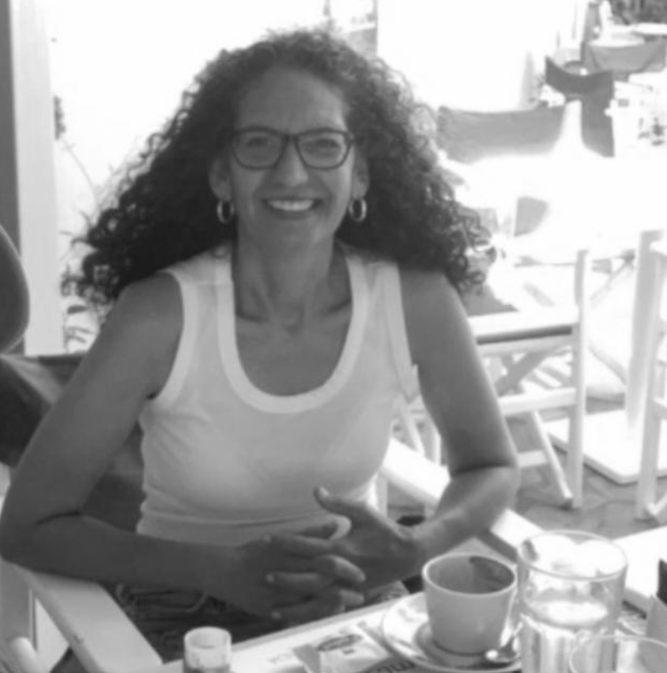
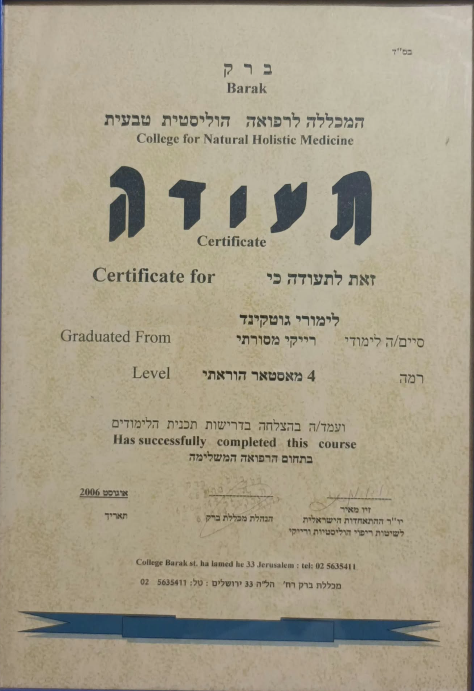
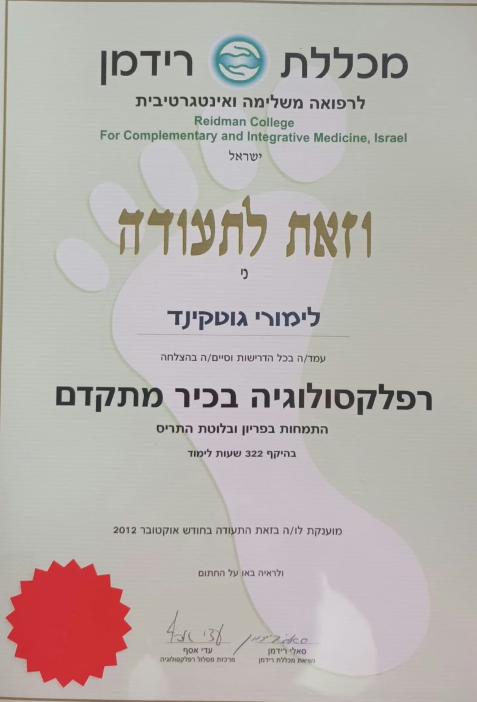
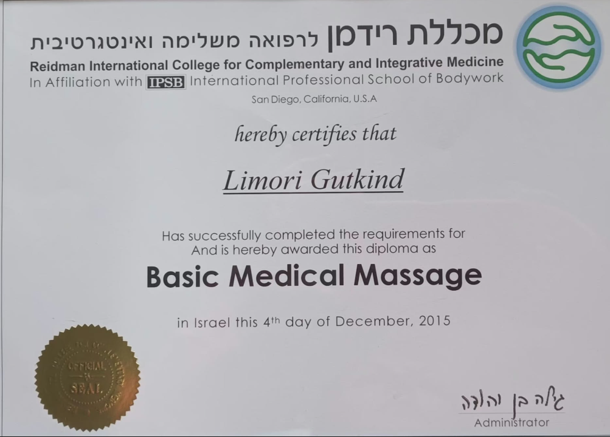
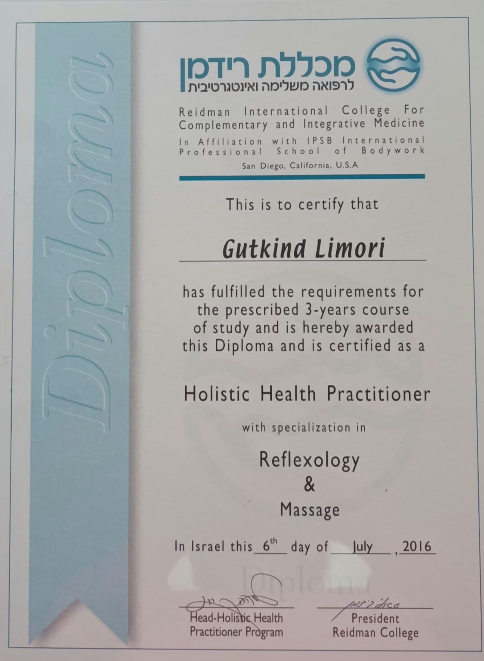
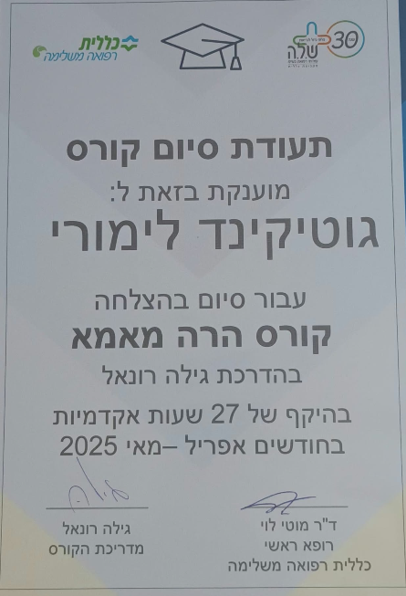
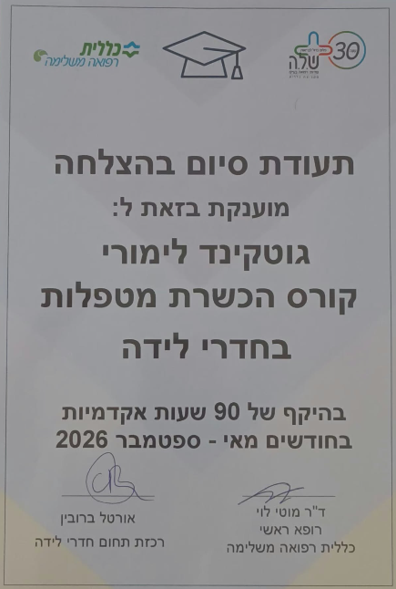

נעים להכיר
לימורי גוטקינד, רפלקסולוגית בכירה
היי, נעים מאוד, שמי לימורי גוטקינד, מטפלת רב־תחומית H.H.P.
אני מטפלת ברפלקסולוגיה מזה 16 שנים בקליניקה הפרטית, ומתוכן 11 שנים בכללית רפואה משלימה. אני מאסטרית ברייקי ומטפלת ברייקי.
אני מתמחה בבריאות האישה, פריון, היריון ולידה ובלוטת התריס. אני מלווה נשים בהיריון לקראת לידה ומטפלת בחדר הלידה.
את לימודיי סיימתי במכללת רידמן לרפואה משלימה ואינטגרטיבית בתל אביב.
הטיפולים הם משלימים ואינם מהווים תחליף לייעוץ, אבחון או טיפול רפואי.
באמצעות רפלקסולוגיה ורייקי אני מציעה טיפול משלים, אישי וקשוב ומותאם לשלב שבו את נמצאת ולמה שהגוף שלך צריך עכשיו.

הדרך המקצועית
הכשרות ותעודות

Reiki Master Teacher
דרגת מאסטר 4 ברייקי, המכללה לרפואה הוליסטית טבעית, 2006.

רפלקסולוגיה בכיר מתקדם
התמחות בפריון ובלוטת התריס, 322 שעות לימוד. מכללת רידמן, 2012.

Basic Medical Massage
תעודת לימודי עיסוי רפואי בסיסי, 4 בדצמבר 2015.

Holistic Health Practitioner
הכשרה תלת־שנתית עם התמחות ברפלקסולוגיה ובעיסוי, 6 ביולי 2016.

קורס הרה מאמא
תעודת סיום קורס בהדרכת גילה רונאל, בהיקף 27 שעות אקדמיות (אפריל–מאי 2025).

הכשרת מטפלות בחדרי לידה
תעודת סיום קורס בהיקף 90 שעות אקדמיות (מאי–ספטמבר 2026).